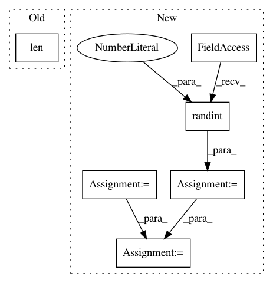

325b02ecb63566f89bd852973629b4ec5ea0f363,flow/scenarios/grid.py,SimpleGridScenario,gen_custom_start_pos,#Any#Any#Any#Any#,542
Before Change
start_pos += [("bot{}_0".format(i), x0 + k * dx)
for k in range(cars_heading_bot)]
start_lanes = [0] * len(start_pos)
return start_pos, start_lanes
@property
After Change
for k in range(cars_heading_right)]
start_pos += [("left{}_{}".format(row_num, i), x0 + k * dx)
for k in range(cars_heading_left)]
horz_lanes = np.random.randint(low=0, high=net_params.additional_params["horizontal_lanes"],
size=cars_heading_left + cars_heading_right).tolist()
start_lanes += horz_lanes
for i in range(row_num):
start_pos += [("top{}_{}".format(i, col_num), x0 + k * dx)
for k in range(cars_heading_top)]
start_pos += [("bot{}_0".format(i), x0 + k * dx)
for k in range(cars_heading_bot)]
vert_lanes = np.random.randint(low=0, high=net_params.additional_params["vertical_lanes"],
size=cars_heading_left + cars_heading_right).tolist()
start_lanes += vert_lanes
return start_pos, start_lanes
@property
In pattern: SUPERPATTERN
Frequency: 3
Non-data size: 6
Instances
Project Name: flow-project/flow
Commit Name: 325b02ecb63566f89bd852973629b4ec5ea0f363
Time: 2019-08-13
Author: eugenevinitsky@users.noreply.github.com
File Name: flow/scenarios/grid.py
Class Name: SimpleGridScenario
Method Name: gen_custom_start_pos
Project Name: daavoo/pyntcloud
Commit Name: 59ec6660464bd378b20d4ae200c7614133a9a38b
Time: 2019-08-26
Author: hc.wang96@gmail.com
File Name: pyntcloud/samplers/points.py
Class Name: FarthestPointsSampler
Method Name: compute
Project Name: alexandrebarachant/muse-lsl
Commit Name: 1ec0207376e3dcece97812f8ae40bc8d7ec9b208
Time: 2017-11-10
Author: hubert@interaxon.ca
File Name: stimulus_presentation/generate_spatial_gratings.py
Class Name:
Method Name: